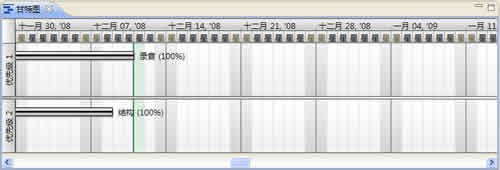

甘特图是一个用来协助用户进行项目管理的工具。XMind的甘特图中会为用户用图形化的进度条的形式，展示当前项目的所有任务的优先级、进度、开始以及结束时间。方法如下：
- 打开项目任务图：
- 打开甘特图视图。
- 视图中会按照优先级的顺序排列出所有的任务。
- 每个任务就是一个任务横向的任务条。
- 通过拖拽任务条可以调整任务的起始、结束时间。

注意：
- 用户在甘特图中对任务进行的调整会同步地在这个任务的任务信息视图中得到显示。
- 用户可以在任务信息视图中通过内部的超链接来及时查看甘特视图中的信息。
您可能还对下列内容感兴趣：
帮助中心